绵阳市潘家沟牡丹生态园
项目位于绵阳西部，偏离主城区25公里，项目规划面积338亩，其中水域面积20亩，农田、坡地和山林面积318亩，且项目在绵阳科技城市集中发展规划范围内。
项目以农旅融合为理念，以发展现代林业产业，实现生态效益、经济效益和社会效益最大化为目标，以发展油牡丹为主导产业，以特色珍稀林木和休闲观光旅游业为补充，建设省内知名、市内领先、区内特色的现代牡丹产业园。该产业园被规划为“两带两区”，分别为生态养殖林带、珍稀植物林带、综合配套区、牡丹丰产区。项目实现了第一产业和第三产业的结合，综合利用产业园内的自然资源及基础设施，实现农旅融合，同时提高了景观效果和园区内经济效益。
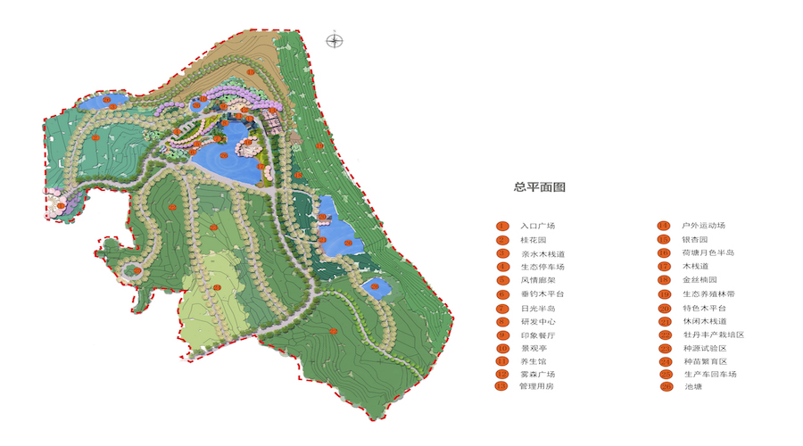 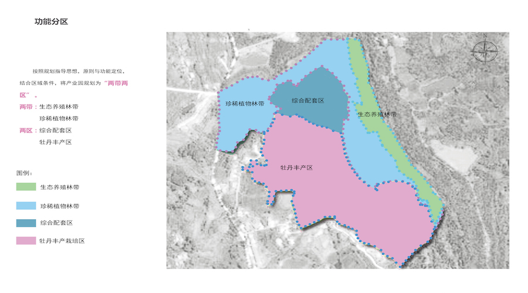
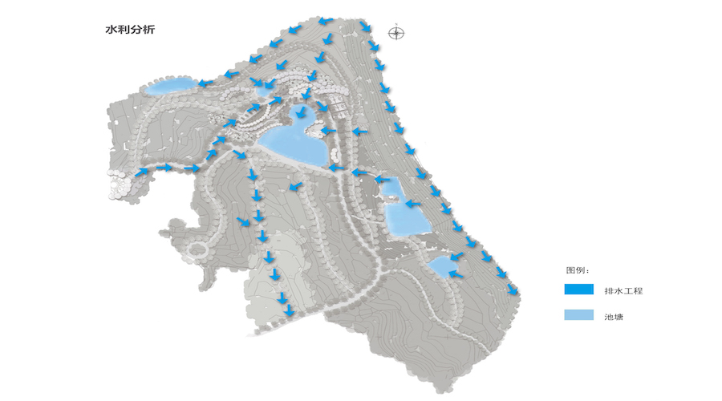
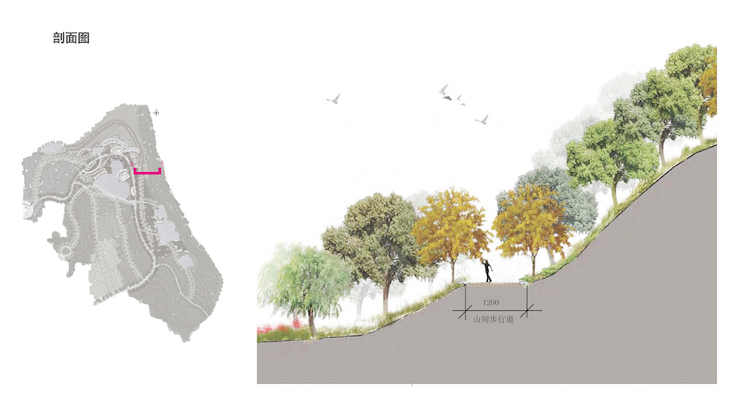
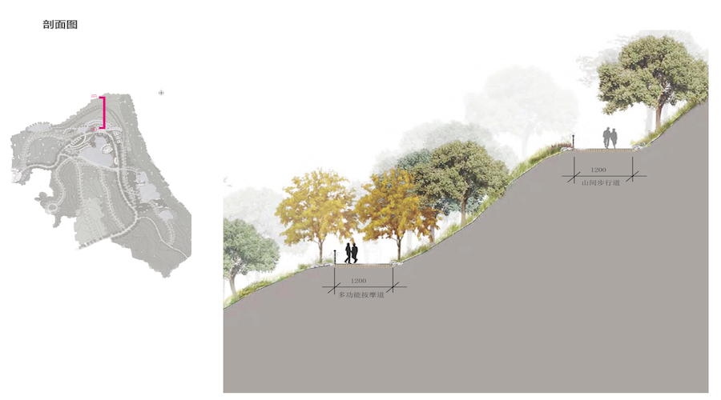
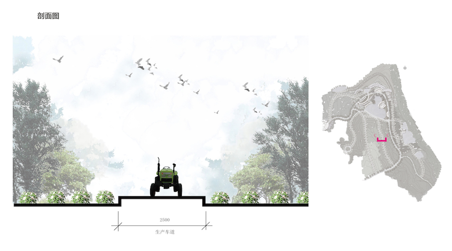
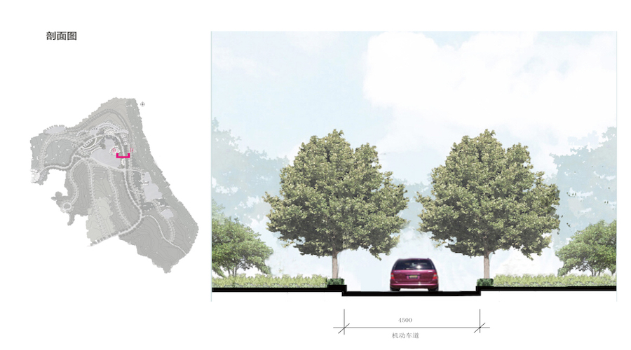
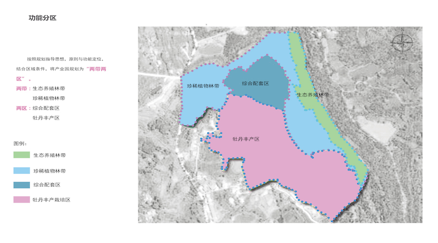
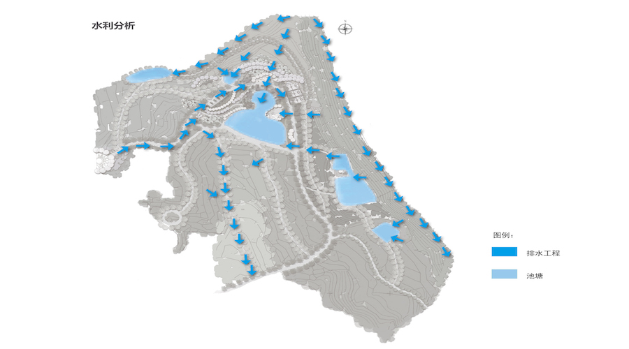
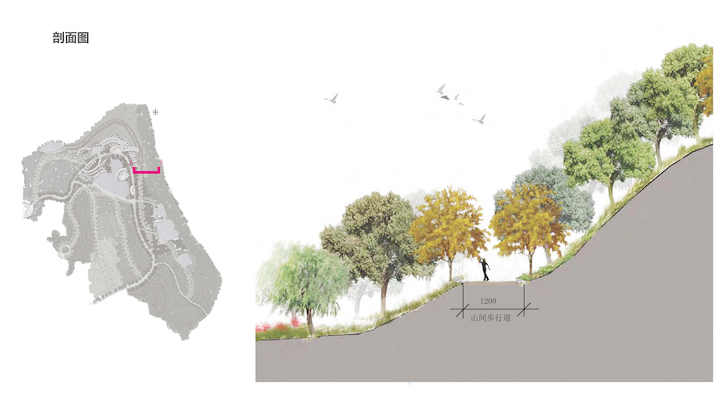
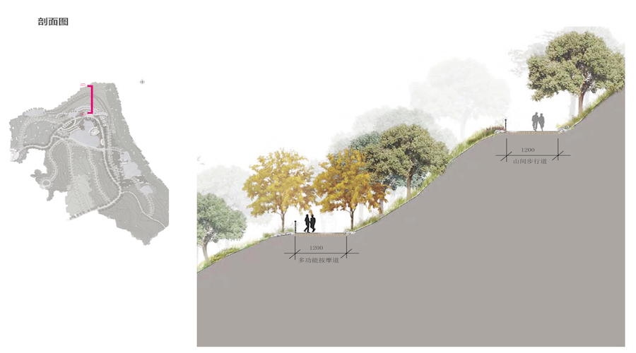
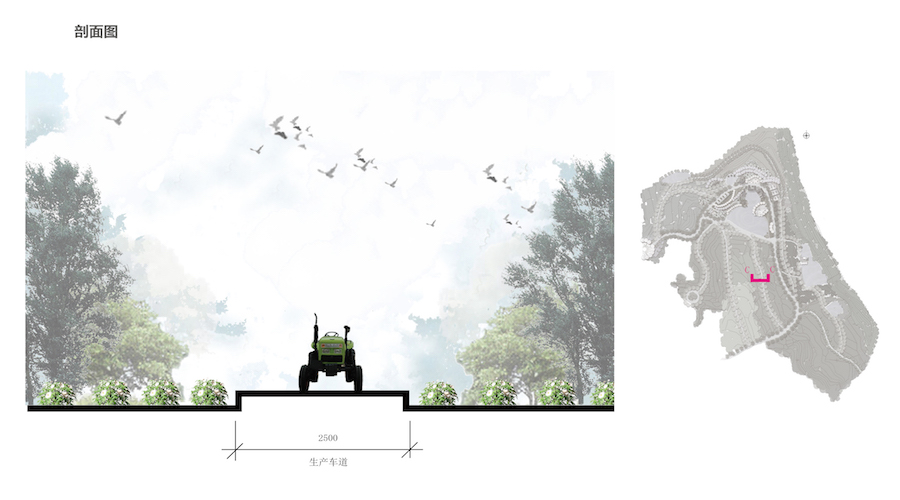
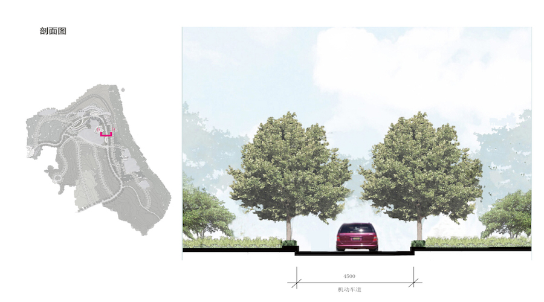